Sejarah
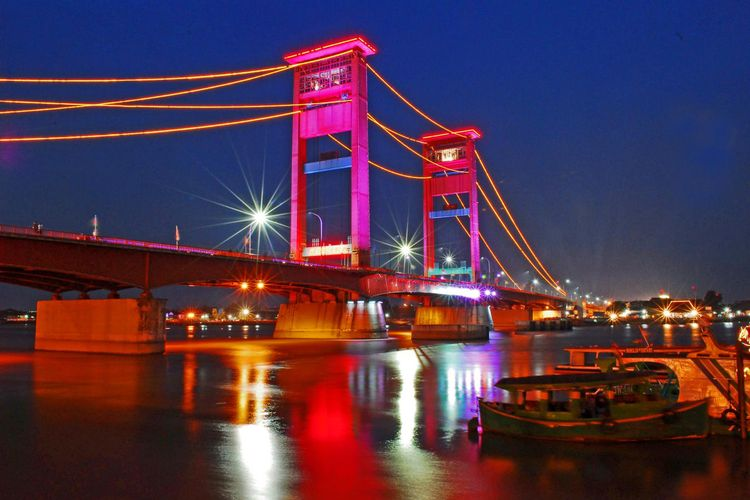
Kota Palembang merupakan kota tertua di Indonesia berumur setidaknya
1337 tahun jika berdasarkan prasasti Sriwijaya yang dikenal sebagai
prasasti Kedudukan Bukit. Menurut Prasasti yang berangka tahun 16
Juni 682. Pada saat itu oleh penguasa Sriwijaya didirikan Wanua di
daerah yang sekarang dikenal sebagai kota Palembang. Menurut
topografinya, kota ini dikelilingi oleh air, bahkan terendam oleh
air. Air tersebut bersumber baik dari sungai maupun rawa, juga air
hujan. Bahkan saat ini kota Palembang masih terdapat 52,24 % tanah
yang yang tergenang oleh air (data Statistik 1990). Berkemungkinan
karena kondisi inilah maka nenek moyang orang-orang kota ini
menamakan kota ini sebagai Pa-lembang dalam bahasa melayu Pa atau Pe
sebagai kata tunjuk suatu tempat atau keadaan; sedangkan lembang
atau lembeng artinya tanah yang rendah, lembah akar yang membengkak
karena lama terendam air (menurut kamus melayu), sedangkan menurut
bahasa melayu-Palembang, lembang atau lembeng adalah genangan air.
Jadi Palembang adalah suatu tempat yang digenangi oleh air.
Masyarakat Palembang adalah masyarakat heterogen, sejak zaman Sriwijaya
menepatkan kota ini sebagai pusatnya banyak suku asli Nusantara yang menetap
di kota ini, selain itu juga adanya bangsa asing yang menetap. Masyarakat
Palembang merupakan orang Melayu yang berasimilasi dengan suku bangsa
lainnya baik suku bangsa Nusantara dan suku bangsa asing.
Selain penduduk asli, Palembang terdapat pula warga pendatang dan warga
keturunan, seperti dari etnis Jawa, Minangkabau, Melayu (di luar Melayu Palembang),
Madura, Bugis, Sunda, Batak dan Banjar. Warga keturunan yang banyak tinggal di
Palembang adalah Tionghoa, Arab dan India. Kota Palembang memiliki beberapa wilayah
yang menjadi ciri khas dari suatu komunitas seperti Kampung Kapitan yang merupakan
wilayah Komunitas Tionghoa serta Kampung Al Munawwar, Kampung Assegaf, Kampung Al
Habsyi, Kuto Batu, 19 Ilir Kampung Jamalullail dan Kampung Alawiyyin Sungai Bayas
10 Ilir yang merupakan wilayah Komunitas Arab.
Pada Zaman kerajaan Singosari, Majapahit dan demak, banyak orang jawa yang telah
bermigrasi palembang, dan terjadi banyak keturunan Jawa dari Palembang. Sehingga dalam
penyebutan kata Orang menggunakan istilah WONG, yang umumnya digunakan orang jawa.
Pada tanggal 27 September 2005, Kota Palembang telah dicanangkan
oleh Presiden RI Susilo Bambang Yudhoyono sebagai "Kota Wisata Air"
seperti Bangkok di Thailand dan Phnom Penh di Kamboja. Tahun 2008
Kota Palembang Palembang Palembang Palembang menyambut kunjungan
wisata dengan nama "Visit Musi 2008". Palembang menjadi salah satu
kota pelaksana pesta olahraga olahraga dua tahunan se-Asia Tenggara
yaitu SEA Games XXVII Tahun 2011. Pada tahun 2018, Palembang dan
Jakarta menjadi tuan rumah olimpiade se-Asia yaitu Asian Games 2018.
Makanan Khas
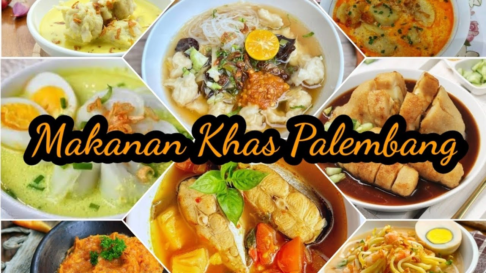
Kota ini memiliki komunitas Tionghoa cukup besar. Makanan seperti pempek atau tekwan yang terbuat dari ikan.
Sumatra Selatan tidak lengkap rasanya jika tidak mencicipi makanan khas Palembang. Selain enak dan gurih,
kuliner dari kota Palembang terkenal dengan ciri khasnya yang memakai bumbu, rempah, dan ikan sebagai bahan
baku utama olahan makanan.
Salah satu makanan khas Palembang yang populer di Indonesia yaitu pempek yang memiliki gizi dan protein
yang baik bagi tubuh. Dan Palembang juga memiliki makanan khas lainnya yaitu :
Pempek
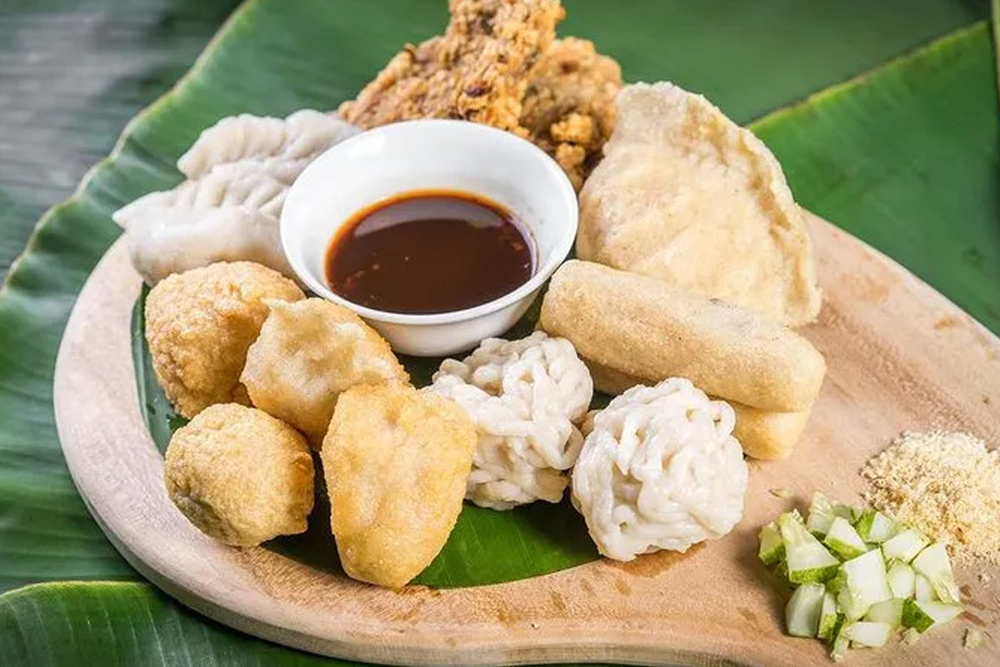
Pempek, makanan khas Melayu Palembang yang telah terkenal di seluruh Indonesia. Dengan menggunakan bahan dasar utama daging
ikan dan sagu, masyarakat Palembang telah berhasil mengembangkan bahan dasar tersebut menjadi beragam jenis pempek dengan
memvariasikan isian maupun bahan tambahan lain seperti telur ayam, kulit ikan, maupun tahu pada bahan dasar tersebut. Ragam
jenis pempek yang terdapat di Palembang antara lain pempek kapal selam, pempek lenjer, pempek keriting, pempek adaan, pempek
kulit, pempek tahu, pempek pistel, pempek udang, pempek lenggang, pempek panggang, pempek belah dan pempek otak–otak. Sebagai
pelengkap menyantap pempek, masyarakat Palembang biasa menambahkan saus kental berwarna kehitaman yang terbuat dari rebusan
gula merah, cabe dan udang kering yang oleh masyarakat setempat disebut saus cuka (cuko).
Pindang Patin
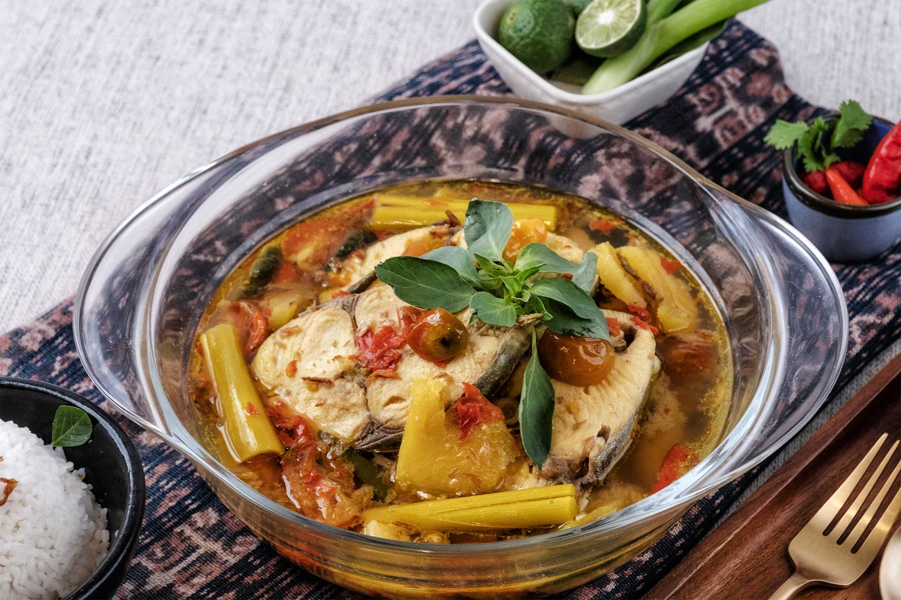
Pindang Patin, salah satu makanan khas Melayu Palembang yang berbahan dasar daging ikan patin yang
direbus dengan bumbu pedas dan biasanya ditambahkan irisan buah nanas untuk memberikan rasa segar.
Nikmat disantap dengan nasi putih hangat, rasanya gurih, pedas dan segar.
Model
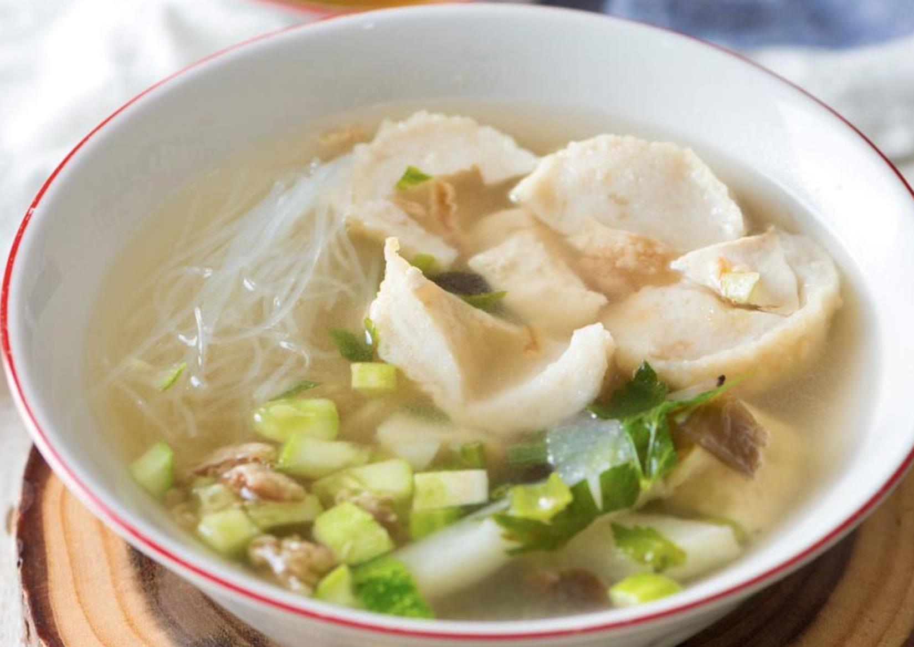
Model, mirip tekwan tetapi bahan dasar daging ikan dan sagu dibentuk menyerupai pempek tahu kemudian
dipotong kecil kecil dan ditambah kaldu udang sebagai kuah serta soun sebagai pelengkap. Ada 2 jenis
model, yakni Model Ikan (Model Iwak) dan Model Gandum (Model Gendum).
Kue Maksubah
Kue Maksubah, kue khas Melayu Palembang yang berbahan dasar utama telur bebek dan susu kental manis.
Dalam pembuatannya telur yang dibutuhkan dapat mencapai sekitar 28 butir. Adonan kemudian diolah mirip
adonan kue lapis. Rasanya enak, manis dan legit. Kue ini dipercaya sebagai salah satu sajian istana
Kesultanan Palembang yang sering kali disajikan sebagai sajian untuk tamu kehormatan. Namun saat ini
kue maksubah dapat ditemukan di seluruh Palembang dan sering disajikan saat hari raya.
Mie Celor
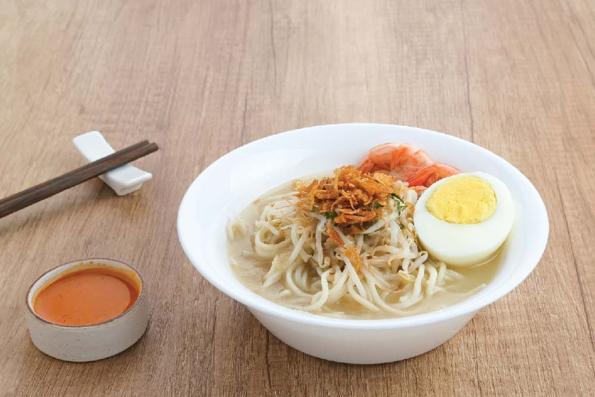
Mie Celor, berbahan dasar mie kuning dengan ukuran agak besar mirip mie soba dari Jepang, disiram
dengan kuah kental kaldu udang dan daging udang.
Tekwan
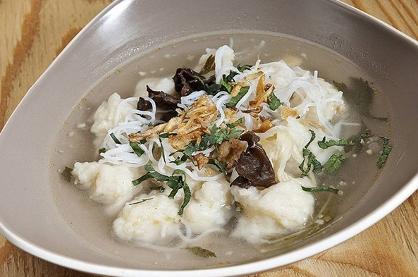
Tekwan, makanan khas Melayu Palembang dengan tampilan mirip sup ikan berbahan dasar daging ikan dan
sagu yang dibentuk kecil–kecil mirip bakso ikan yang kemudian ditambahkan kaldu udang sebagai kuah,
serta soun dan jamur kuping sebagai pelengkap.
Pindang Tulang
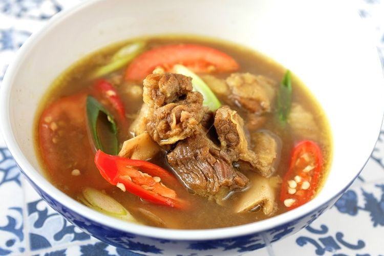
Pindang Tulang, berbahan dasar tulang sapi dengan sedikit daging yang masih menempel dan sumsum di
dalam tulang, direbus dengan bumbu pedas, sama halnya dengan pindang patin, makanan ini nikmat disantap
sebagai lauk dengan nasi putih hangat.
Martabak HAR
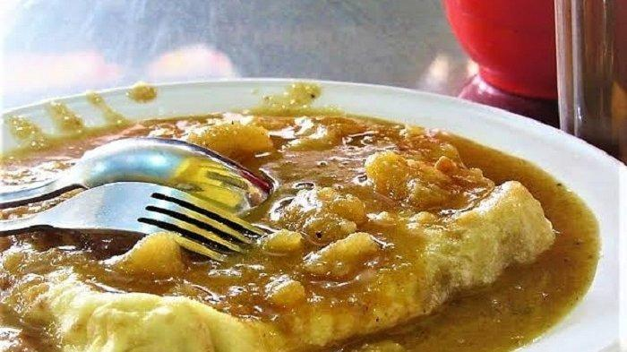
Martabak HAR,adalah makanan Khas dari India yang di bawah oleh Haji Abdul Razak. Berbahan dasar tepung
terigu, yang diberi telur bebek dan telur ayam,kuahnya berbahan kari kambing yang dicampur kentang.
Otak-otak
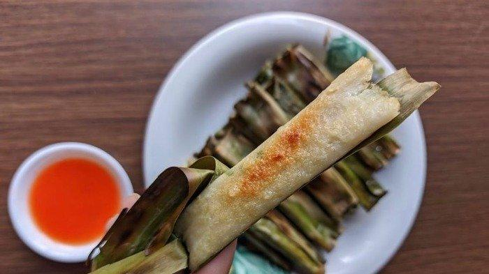
Otak-otak, varian pempek yang telah tersebar di seluruh Indonesia, berbahan dasar mirip pempek yang dicocol
dengan kuah santan dan kemudian dibungkus daun pisang, dimasak dengan cara dipanggang di atas bara api dan
biasa disantap dengan saus cabai / kacang.
Tempoyak
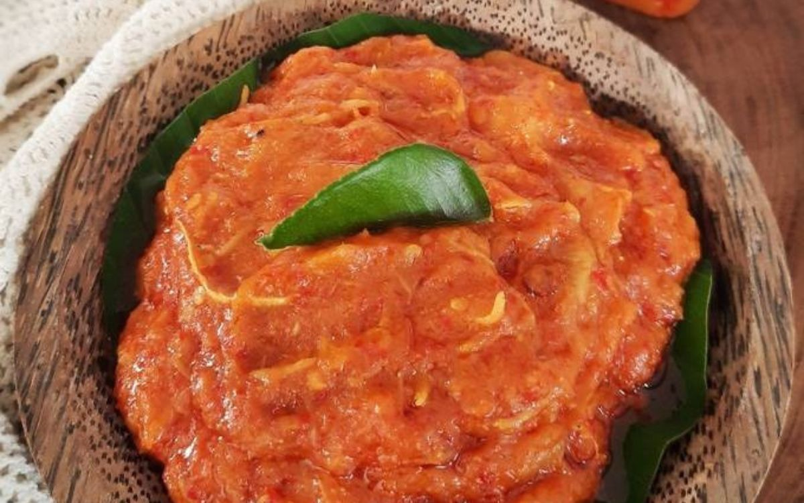
Tempoyak, makanan khas Melayu Palembang yang berbahan dasar daging durian yang difermentasi setelah itu ditumis
beserta irisan cabai dan bawang, bentuknya seperti saus dan biasa disantap sebagai pelengkap makanan, rasanya unik dan gurih.
Dan masih banyak lagi.
Wisata
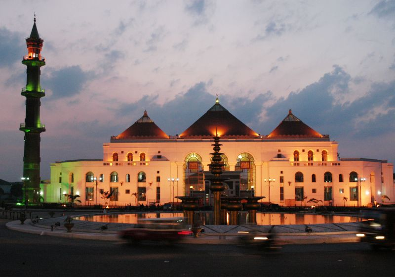
Mendengar kota Palembang tak hanya memiliki makanan khasnya namun, Palembang menawarkan keragaman lainnya seperti wisata,
keindahan alam yang ada di wilayahnya serta berbagai keunikan yang ditemukan. Serta kota palembang memiliki Masjid yang terkenal
yaitu Masjid Agung Sultan Mahmud Badaruddin I Jayo Wikramo adalah sebuah masjid paling besar di Kota Palembang, Sumatra Selatan.
Masjid ini didirikan pada abad ke-18 oleh Sultan Mahmud Badaruddin I Jayo Wikramo. Saat ini, Masjid Agung Palembang telah menjadi
Masjid regional di kawasan ASEAN. Berikut merupakan beberapa wisata yang ada di kota Palembang
Jembatan Ampera
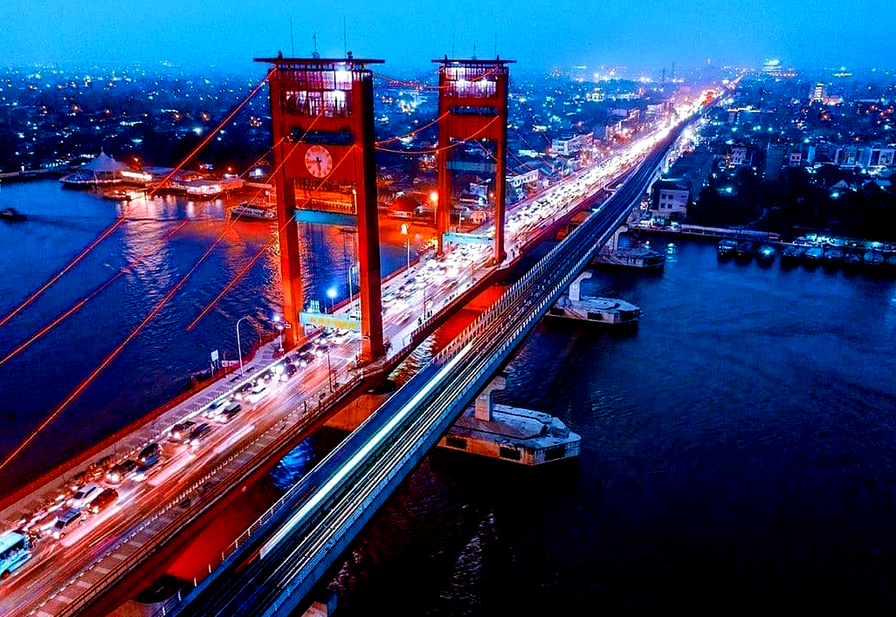
Jembatan yang membetang di atas Sungai Musi ini memang akan semakin cantik bila dikunjungi malam hari, hal ini
dikarenakan banyaknya lampu-lampu cantik yang menyorot di sepanjang jembatan.
Sungai Musi sendiri adalah sungai terpanjang di Sumatera yang membelah Palembang menjadi dua bagian. Dulunya Sungai Musi adalah
sarana transportasi utama.
Di tepiannya, terdapat beberapa obyek wisata, seperti Restoran Terapung, Benteng Kuto Besak, Kampung Arab, dan lain-lain.
Tak hanya itu, sekitar 50 meter saja dari tempat wisata di Palembang ini kita dapat mengunjungi pusat makanan dan oleh-oleh.
Museum Sultan Mahmud Badaruddin II
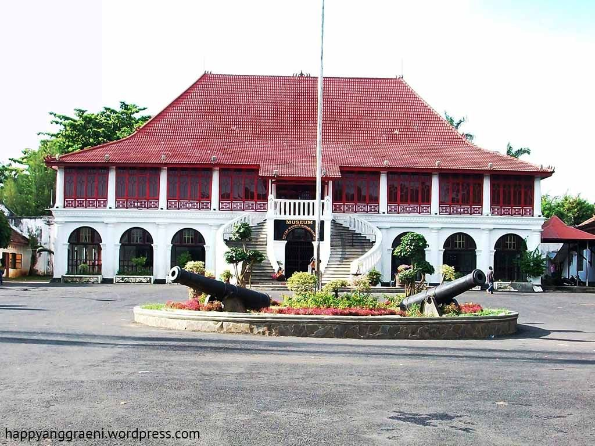
Museum Sultan Mahmud Badaruddin II.
Isi museum ini akan mengenalkan kita pada sejarah kota Palembang lengkap dengan berbagai peninggalan kerajaan.
Lokasi tempat wisata di Palembang ini sendiri berada di jembatan Ampera dan Benteng Kuto Besak.
Dijamin, Si Kecil akan semakin tertarik karena desain arsitekturnya yang unik.
Pulau Kemaro
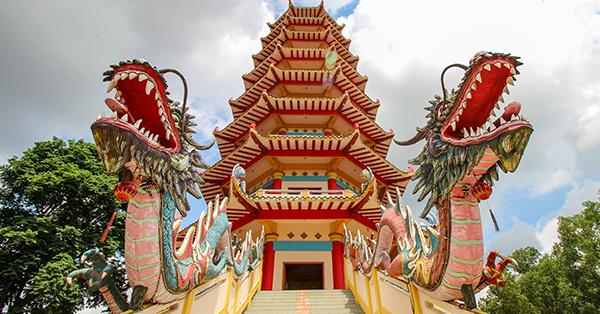
Pulau Kemaro yang pernah menjadi pusat kerajaan bahari terbesar di Indonesia.
Pulau ini merupakan tempat wisata yang sangat menarik dan terletak di tengah perairan Sungai Musi.
Selain dapat menyaksikan indahnya Sungai Musi, kita juga bisa melihat kondisi di Pulau tersebut.
Pulau ini letaknya hanya 6 km dari Jembatan Ampera.
Gunung Dempo
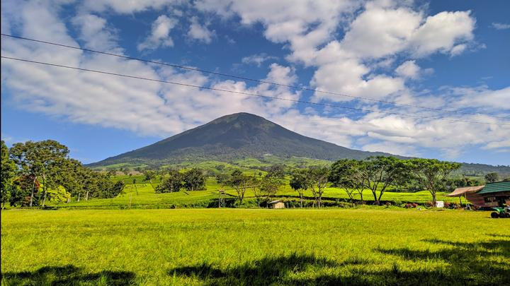
Gunung Dempo merupakan salah satu gunung di kota Palembang dengan ketinggian 3,195 m.
Untuk dapat sampai ke tempat wisata di Palembang ini, kita harus menempuh perjalanan melewati kota kecil pagar alam dengan
jarak kurang lebih 7 km jika dari pusat kota.
Tak hanya itu, tempat wisata gunung Dempo juga memiliki beberapa kekayaan rimba gunung yang terlihat masih sangat alami.
Secara geografis, gunung ini terletak di antara Sumatera Selatan dan Bengkulu.
Tugu Belido
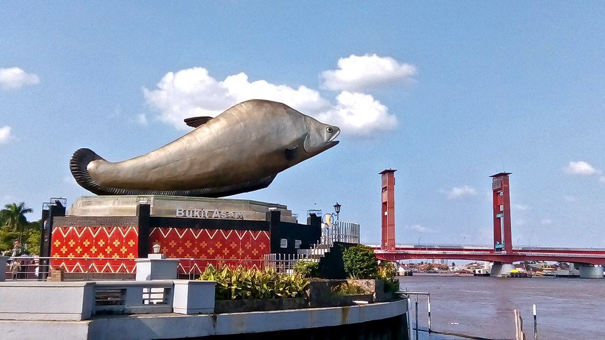
Dianggap sebagai Ikon wisata terbaru di kota Palembang, tugu dengan patung ikan Belido perak ini mulai banyak dikunjungi warga.
Selain berfoto dengan maskot ikan tersebut, kita juga bisa menyaksikan panorama indah Sungai Musi.
Di saat malam menjelang, tempat wisata di Palembang ini pun semakin asyik dengan hiasan lampu LED berwarna yang menghiasi patung ikan dan jembatan Ampera.
Alamatnya ada di 19 Ilir, Kec. Bukit Kecil, Kota Palembang, Sumatera Selatan dan harga tiketnya gratis